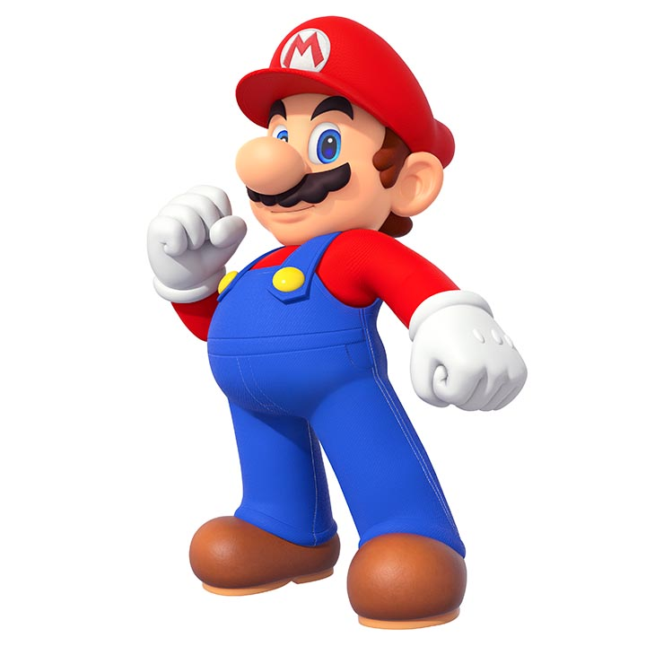

|
Mario (マリオ) est un personnage de jeu vidéo devenu la mascotte de
Nintendo. Né de l'imagination du concepteur de jeux Shigeru Miyamoto, il est italo-américain. Dabord
dans le jeu Donkey Kong, sous le nom de Jumpman en 1981. Depuis, Mario a accompagné les consoles de
Nintendo. |
Les jeux de la série Super Mario ont joué un rôle important dans
l'évolution du jeu de plates-formes, dont ils renouvellent régulièrement les codes. Plusieurs
épisodes ont marqué durablement le jeu vidéo, notamment le premier opus, Super Mario Bros. (NES,
1985), qui est resté pendant vingt-trois ans le jeu le plus vendu, avec plus de 40 millions de
cartouches écoulées, ou sa première apparition en 3D, Super Mario 64 (Nintendo 64, 1996). Au fil des
années, le personnage de Mario s'est diversifié. |
La série Mario est la plus vendue de l'histoire du jeu vidéo, avec plus
de 195 millions d'exemplaires écoulés. Cependant, d'après les estimations du site VG Chartz,
l'ensemble des jeux liés à Mario représentent au moins 450 millions d'exemplaires vendus. |
L'univers de Mario s'est progressivement enrichi au fil des jeux, avec
l'apparition de nouveaux personnages. Les principaux sont Luigi, son frère ; la princesse Peach, sa
dulcinée ; les Toads, serviteurs de Peach ; Yoshi, sa fidèle monture ; Bowser, son ennemi juré,
Wario, son grand rival et Waluigi, le compère de Wario. Sa voix est doublée par Charles Martinet.
|
 |